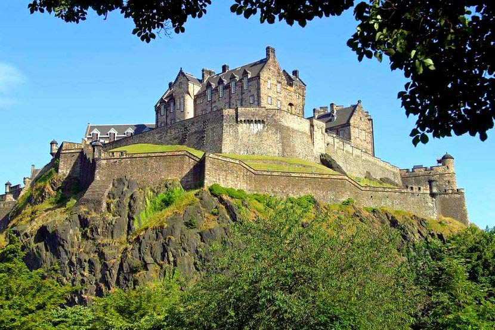
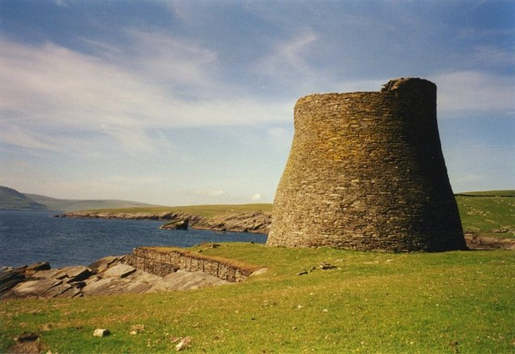
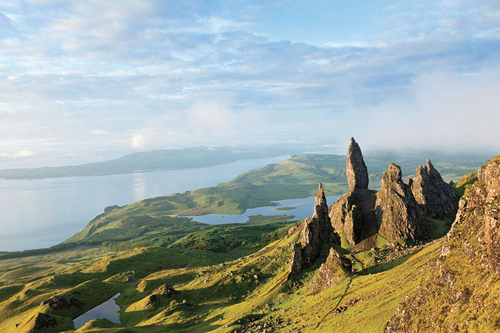
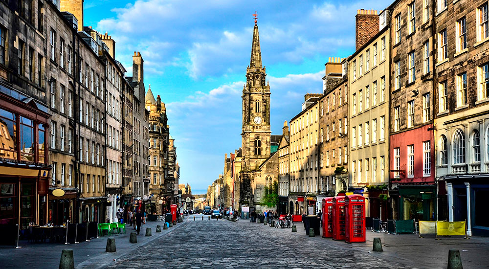

| Главная | История | Культура | Достопримечательности | Интересные факты |
|---|---|---|---|---|
| Достопримечательности | ||||
Эдинбургский замок
Эту крепость не зря называли «ключом к Шотландии». В течение многих веков мощные стены, возведенные на вершине Замковой скалы, между прочим, потухшего вулкана, защищали и Эдинбург, и всю страну. Замок отлично сохранился и до сих пор внушает трепет своими величественными стенами и древней историей.
Брох-оф-Моуса
Это круглое крепостное сооружение находится на острове Моус и представляет собой яркий образец защитных построек эпохи железного века. Брох-оф-Моуса для своих лет отлично сохранился, является кандидатом на внесение в список ЮНЕСКО, находится в живописной местности, а также является одним из наиболее интересных объектов в ходе экскурсии по этому району Шотландии.
Остров Скай
Этот остров считается одним из самых красивых уголков Шотландии. Сюда приезжают, чтобы прогуляться по побережью, подняться на высшую точку острова Скай — гору Кулин, увидеть замок Данвеган, который до сих пор принадлежит клану МакКлауд. Добраться на остров можно не только на пароме, но и по одноименному мосту.
Королевская Миля в Эдинбурге
Это не одна, а несколько улиц в центре Эдинбурга, в его исторической части. Обойти Королевскую милю стороной не получится никак, да и как пройти мимо ее красивой архитектуры, многочисленных магазинов, уличных музыкантов и артистов! Именно на Королевской миле расположены главные достопримечательности города.
Озеро Лох-Ломонд
Это самое большое по площади озеро не только самой Шотландии, но и Великобритании. Здесь очень много островов и островков, между которыми курсируют многочисленные катера, каноэ и каяки. Озеро Лох-Ломонд является традиционным местом отдыха для местных жителей. Здесь созданы отличные условия для занятия водными видами спорта, а на юго-западном берегу находится элитный гольф-клуб.